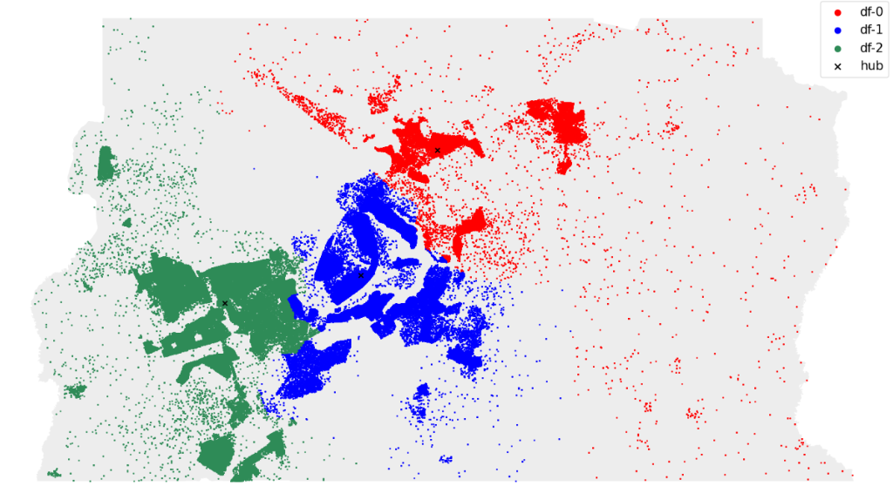
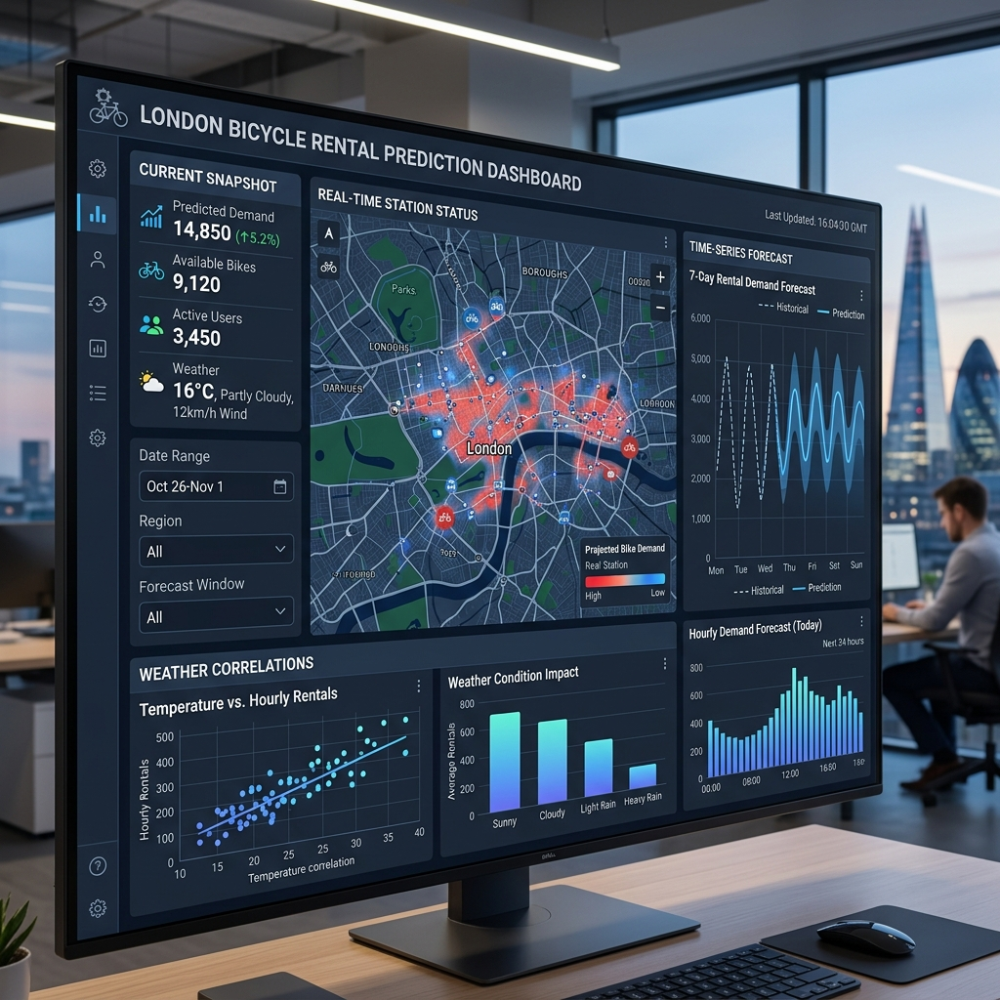

William S. Costa
Analista de Dados
Especialista em transformar dados complexos em decisões estratégicas através de dashboards de alto impacto e modelos preditivos eficientes.
Dashboards
Dashboards
Dashboards
Visualizações interativas e Business Intelligence
Projetos desenvolvidos por mim

Análise Logística | Loggi (DF)
Análise exploratória e Data Wrangling sobre dados logísticos da startup Loggi no DF, utilizando dados geoespaciais para avaliar a eficiência da infraestrutura de distribuição regional.

Pipeline de Dados do Telegram com AWS
Este projeto implementa um pipeline robusto e escalável na AWS (Amazon Web Services) para transformar a comunicação transacional de um grupo do Telegram em dados analíticos valiosos.
Análise de Crédito com SQL e Storytelling
Este projeto consiste em uma Análise Exploratória e Diagnóstica Completa de uma base de dados de clientes de cartão de crédito.

Tratamento de Dados de Salários em Data Science
Este projeto tem como objetivo realizar o processo de ETL (Extração, Transformação e Carga) em um dataset público do Kaggle contendo informações salariais na área de Ciência de Dados.

Previsão de Aluguéis
O projeto busca entender os fatores que influenciam o número de aluguéis de bicicletas em Londres, utilizando modelos preditivos para estimar a demanda horária.
Formação & Certificações
Curso Profissionalizante
Analista de Dados
GRADUAÇÃO
Ciência de Dados
Timelapse de Desenvolvimento
Bastidores da construção de um pipeline de dados robusto. Acompanhe a transformação de dados brutos em insights estratégicos através de processos de ETL automatizados.
Fase 01: ETL Process
Pipeline de extração, limpeza e carga de dados